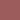
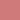
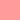
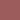
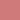
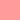

[Top]
Image
Image.Color
Image.Color.Color
|
Method Image.Color.Color()->dark()
- Method
dark
-
object light()
object dark()
object neon()
object bright()
object dull() - Description
-
-
Color modification methods. These returns
a new color.
| method | effect |
h | s | v | as |
|---|
| light | raise light level | ±0 | ±0 | +50 |
 




 |
| dark | lower light level | ±0 | ±0 | -50 |


|
| bright | brighter color | ±0 | +50 | +50 |


 |
| dull | greyer color | ±0 | -50 | -50 |

 |
| neon | set to extreme | ±0 | max | max |

 |
light and dark lower/highers saturation
when value is min-/maximised respective.
- Returns
-
-
the new color object
- Note
-
-
The opposites may not always take each other out.
The color is maximised at white and black levels,
so, for instance
Image.Color .white->light ()->dark ()
doesn't give the white color back, but the equal to
Image.Color .white->dark (), since
white can't get any light er.
|
 Image.Color.Color()->create()
Image.Color.Color()->create()